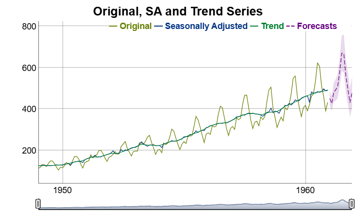

Object oriented wrapper around the seasonal adjustment packages in the rjdverse. The package performs time series adjustments with the java library JDemetra+ and focuses on batch processing, hierarchical time series and analytic charts.
Installation
The following commands install persephone3 as well as the packages from the rjdverse that talk with the java interface.
# install dependencies
remotes::install_github("rjdverse/rjd3toolkit@*release")
remotes::install_github("rjdverse/rjd3x13@*release")
remotes::install_github("rjdverse/rjd3tramoseats@*release")
# install the package from GitHub
remotes::install_github("statistikat/persephone3")Usage
Objects can be constructed with perX13() or perTramo(). Subsequently, the run() method runs the model and output gives access to the output object from rjd3x13::x13_fast() or rjd3tramoseats::tramoseats_fast().
# construct a seasonal adjustment object for the AirPassengers dataset
obj <- perX13(AirPassengers)
# run the model
obj$run()
# access the preprocessing slot of the rjd3 output object
obj$output$preprocessing
#> Log-transformation: yes
#> SARIMA model: (0,1,1) (0,1,1)
#>
#> SARIMA coefficients:
#> theta(1) btheta(1)
#> -0.4018 -0.5569
#>
#> No regression variables
#>
#> For a more detailed output, use the 'summary()' function.
# visualize the results
obj$plot()
Further reading
This section still needs an update to persephone3.
More information can be found on the github-pages site for persephone.
- An overview of the package is available in the [useR!2019 slides].
- The plotting vignette contains examples of interactive plots htat can be created with
persephone. - More information about hierarchical time series can be found in the hierarchical timeseries vignette.